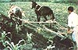

"Oh yes, Frances Lappe . . . isn't she that cookbook author who mixes beans and rice? "
As the above quote implies, a lot of people do think of Frances Moore Lappe as a sort of "Julia Child of the Soybean Circuit". . . but that's not the only stereotype this woman has had to contend with. She's been seen as everything from an empty-brained cheerleader to a slogans-pouting radical, but Frankie (as her friends call her) is actually a complex, concerned person who strives-in her own thoughts and actions-to avoid narrow and oversimplistic analyses or solutions.
The abiding concern of Lappe's work-the very large job of fighting the injustice of hunger in a world of plenty-has led her to explore food-related topics ranging from protein complementarity to the detrimental aspects of our nation's foreign aid. In the course of those studies, she's authored (or coauthored) Diet for a Small Planet . . . Food First: Beyond the Myth of Scarcity . . . Aid as Obstacle . . . What Can We Do? . . . World Hunger: Ten Myths . . . Mozambique and Tanzania. . . Casting New Molds . . . and, recently, a completely new version of her first book, called The Tenth Anniversary Edition of Diet for a Small Planet.
This energetic woman also founded-in cooperation with Joseph Collins-the Institute for Food and Development Policy, a research and education group that's having a real impact on food policy in the world today. Institute publications have been read and admired at the village level in such places as Bangladesh, the Philippines, and Central America . . . the group's staffers have provided national planning assistance to the presidents of both Tanzania and Nicaragua . . . and Mexico has devised a completely new land use policy based on "food first" concepts.
Just as important, Frankie hasn't let her determination diminish her warm and unpretentious personality. She puts a great deal of energy into raising her two children, Anthony and Anna . . . is honestly willing to answer "I don't know" to a question she hasn't fully studied . . . and was just as attentive to the needs of the two MOTHER staffers who visited her as they tried to be to hers.
Photographer Steve Keull and writer Pat Stone spent a long but memorable day interviewing Ms. Lappe in her home city of San Francisco. (Actually, one of the reasons the exchange took so long was that the threesome tape-recorded the discussion in snatches: Frankie was so burned out on indoor desk work-having just finished her new Diet volume-that they spent the entire day at wharfs, public parks, and open-air diners in search of an outdoor spot where they could hear themselves talk.) We think that-regardless of whether you agree with everything Ms. Lappe says-you'll find this edited transcript of their discussions more than a little eye-opening.
PLOWBOY: Ms. Lappe, you've made the struggle against the causes of world hunger your life's work. I'd imagine that one of the most difficult obstacles to educating people about such problems is the fact that many individuals find the issue too depressing to even think about.
LAPPE: Yes, most people are so overwhelmed by the horror of world hunger that they feel paralyzed . . . so they have to block the Subject out.
PLOWBOY: But you don't find that the immensity of the issue makes you feel helpless?
LAPPE: My reaction is exactly opposite to that! Understanding world hunger has opened up all sorts of doors in my life, and helped me become more powerful. I began to see parallels between the plight of starving people in the Third World and what was happening in my own country . . . and I was able to see patterns in the jumble of facts. It became possible, then, to figure out what I, as an individual, could do. And my whole life took on new meaning. I've heard from thousands of others around the country, telling me about the positive changes that have taken place in their lives, too, as they've learned more about the politics of food. And that's what the Institute for Food and Development Policy is for: Our work is meaningless unless it frees people to act . . . and it can best do so by removing the paralyzing fears and misinformation that block them.
Of course, I had to grow into that sort of freedom myself. I was brought up in an anti-intellectual culture in Fort Worth, Texas back in the 1950's. I was a high school cheerleader, the one who dated the quarterback. At that stage I didn't much value my own thoughts or think I could make an original contribution to anything. I felt very powerless.
PLOWBOY: And now you're a nationally known author and head of one of the world's most respected food activist groups. What happened?
LAPPE: The year 1966 was the turning point for me. What with the struggle in Vietnam, the civil rights movement, and the war on poverty, our country seemed to be in a terrible state. I had a desperate feeling that something had to be done-right then-to improve the situation, or all hope would be lost. So since I felt a need to help people who were really suffering, I worked for two years in Philadelphia . . . as a social worker with the Welfare Rights Organization.
But that job was totally frustrating. Even when I was able to succeed in a given day's goal of-say-forcing a landlord to make a needed repair, I knew I wasn't doing a thing to combat the causes of the suffering around me. Most evenings I came home in tears.
I next tried attending a graduate school program in community organizing, at Berkeley, in an attempt to learn more about what could be done to change the world around me for the better. But that didn't answer my questions or even address my feeling of helplessness. So I became more miserable and confused.
Finally, I vowed to do whatever I could to figure out how my actions might have some impact on the roots of needless suffering. I dropped out of graduate school-a decision so traumatic it actually made me ill-and tried to start learning for myself. In a quiet basement corridor of the agricultural library at the University of California in Berkeley, I read books that attempted to explain the causes of poverty. After a few months I began to home in on the issue of food, because I felt that if I could just grasp that subject, I would better understand the overwhelming complexities of politics and economics.
Then in late 1969, in my basement library hideaway, I discovered a few facts about the U.S. agricultural system that changed the very questions I was asking . . . and also changed my life. I found out that over half of the food harvested in our country is used to feed livestock, and that only a tiny fraction of that energy and protein value gets returned to us in the form of meat. I also learned that most Americans consume about twice the protein their bodies can use . . . and that certain plant food combinations can create proteins that are just as valuable to the body as is meat protein.
In other words, our food system-goaded by a relentless push to continuously increase production-seems almost designed to get rid of a tremendous abundance of grain! Hungry people throughout the world can't afford to buy that food, so it's fed to livestock and converted to meat . . . which is sold to people who are already well fed! Upon understanding that scenario, I felt like the little boy in the fairy tale who cries, "The emperor wears no clothes! "
PLOWBOY: Why were you-unlike the "experts"-able to ask questions that challenged the basic assumptions behind our food production system?
LAPPE: I finally realized why those people kept asking the wrong questions when I attended the much-heralded World Food Conference in Rome in 1974 . . . and watched all the agricultural authorities constantly ask the chemical corporation executives how to increase food production. Such individuals are trained to help direct the powerful institutions that control our economic system, so their work is done within the system that creates needless hunger. They've become incapable of seeing outside the boundaries of their own work environments.
"We shouldn't feel deadened by guilt about the plight of the hungry of the world . . . we're all victims of the same economic forces!"
I, on the other hand, spent a lot of time just "following my nose", reading on my own. Then, too, the fact that I'm a woman may have helped. My sex has been a great handicap to me in that I was brought up to have a poor self-image and not to take my intellectual capacity seriously. But being a woman has also been a great advantage, because it allowed me to keep from being locked into society's expectations and institutions and enabled me to stand outside, ask the unorthodox questions, and uncover some of the central myths of the hunger issue.
PLOWBOY: What are those myths?
LAPPE: Essentially, they are the beliefs about the causes of hunger: that hunger is brought about by a scarcity of resources, or by overpopulation, or by insufficient food production. I believe, instead, that it's created by a steadily increasing concentration of control over food-producing resources. Hunger is a people-made phenomenon, so the central issue is power: the power of those who make the decisions about what is grown and who, or what, it's grown for.
Right now, throughout most of the world, fewer and fewer people are in charge of making the decisions about food production. It's become a kind of snowballing phenomenon. Just look back about 25 years ago, to the first introduction of hybrid seeds and modern machinery into Third World agriculture. Who gained from the new resources? Those few literate farmers who already had a decent amount of land and connections in the government! Such individuals were able to profit and then to use that money to buy more acreage . . . which gave them equity to get loans, expand their holdings even further, acquire newer machines, and so on.
In such a process, the majority of people end up with less and less land-or none at all-and they also lose jobs to the new equipment. Worse still, as they become increasingly impoverished, they lose even the power to be part of a strong local buying market. And when the peasants can't afford to purchase basic beans and rice and corn, food production becomes geared more and more toward providing luxury crops and meat for a small elite in the cities and-through exports-for people in other nations. Now this situation isn't part of a plot by cruel landowners to starve local people, yet the very processes that increase the food production in such circumstances also increase hunger!
In our books, we discuss this trend, following it from the village to the national level. As examples, 44% of the basic staple grains grown in Brazil are now being fed to livestock . . . in Central America, two-thirds of the farmland-much of it prime agricultural acreage-is being used to graze cattle . . . and the people of the Philippines are now considered by the World Health Organization to be the worst fed in all of Asia, yet that country exports rice!
All this inequality is inefficient, too-as well as inhumane-because small farms actually produce more food per acre than do large ones. That's true in every country we've studied . . . including the U.S. Bigger is not better: antidemocratic structures are not very effective.
PLOWBOY: You're saying, then, that using advanced technology to grow more food actually increases world hunger. That's a pretty startling idea.
LAPPE: It can do so. It's often said that I'm against technology or increased food production. But that's an oversimplification and thus not true. What matters is always who benefits from the new technology. For instance, consider the impact of biogasification units that convert animal waste to gas energy. Here's a small-scale "appropriate" technology that, on the surface, seems ideal for poor regions . . . and indeed, both China and India have started using it.
There's a difference, though. The biogasification units in China are managed at the village level, so everyone in the area benefits from the new energy supply. But in India the devices are controlled by the few people who have the capital to invest in a unit and the animals to produce the needed waste. Worse yet, once the biogasifier is set up and running, all of a sudden dung has a price. Where before even the poorest people could gather that waste to use as fuel, it's now often valuable enough to be beyond their economic reach. So instead of helping everyone, the technology benefits some and harms others.
PLOWBOY: I can't imagine anyone's disagreeing that there is great injustice in the manner in which food and power are shared in the world. But many people would still argue that the primary cause of hunger is simply the existence of too many people for the resources of our limited planet to serve.
LAPPE: Then how do such individuals explain the fact that there is enough grain produced-right now-to provide everyone in the world with more than 3,000 calories a day . . . and that estimate doesn't even include the other foods-such as beans, root crops, fruits, nuts, vegetables, and grass-fed meats-that are grown? Even in Bangladesh, a country which is often considered a hopeless "basket case", locally produced grain alone could provide each person with over 2,600 calories a day . . . and that country has amazingly rich agricultural assets that, because of the inequality of control there, haven't been tapped. Likewise, during the infamous famine in the African Sahel region in the early 1970's, every country involvedwith the possible exception of Mauritania-produced enough grain to feed its total population. In fact, a number of Sahelian nations actually increased their production of such export crops as cotton, peanuts, and vegetables during this awful period.
PLOWBOY: But if you feed poor people without limiting their birth rate, isn't it possible that you'll exacerbate, rather than improve, the situation?
LAPPE: Men and women aren't going to be motivated to practice any form of birth control until they know that most of the children they do bear will survive! As it is now, the only way poor people can provide for their old age is to have several children who will care for them . . . and the only way they can be sure of having enough living offspring is to have many, many births. People must be sure that they can meet their own basic security needs, and that the children they bear will have a reasonable chance to survive, before birth control can be considered a realistic option. Only then, when people have freedom from famine, can conscientious efforts to teach and encourage family planning be successful.
PLOWBOY: Would you accept the point of view that one of the primary causes of world hunger is that rich countries exploit poor ones?
LAPPE: It's not a case of the wealthy world ripping off the impoverished world . . . that's another basic myth, and one that I admit I believed for many years. Instead of thinking of countries as homogeneous units, we have to focus on the people who control the wealth in our society, and of those who control the wealth in the Third World.
In most cases, the leadership in the Third World doesn't represent the people there. Even if those politicians were granted all the high-sounding concessions they ask for from the industrialized powers, the majority of their people would still go hungry. For instance, many leaders of underdeveloped countries push for better terms of trade for their exports . . . on the grounds that the income derived from increased sales will improve their people's economic situation. Well, suppose the price of coffee, say, goes up. If nothing else changed, the small farmers-individuals who were growing food for themselves-would be forced off their land so that richer growers could plant more and more coffee to take advantage of the export income. In fact, in many Third World countries the poor do best when prices for their nation's major crops are depressed . . . because big plantation owners are then less likely to seize land belonging to the "little guys".
But once again, it's essential that we not oversimplify . . . because not all food exports are bad. In Nicaragua-which is genuinely attempting to redistribute land and wealth-coffee export income is used for basic development. So when coffee prices crashed recently, after that nation's government had heavily invested in the crop, it hurt the society as a whole.
PLOWBOY: The problem, then, isn't that rich countries exploit poor ones . . . but rather that there's a class of people, in both types of nations, whose interests and food tastes have been set in opposition to the basic needs of poorer citizens.
LAPPE: And that situation is getting steadily worse. As impoverishment grows in the underdeveloped countries, there's more and more export . . . in effect, we're now seeing the establishment of a global supermarket. It's no longer a case of only the traditional tropical crops-such as bananas, pineapples, and coffee-being shipped out of Third World nations. Now, America gets one-half to two-thirds of its winter vegetables from Mexico. And cassava, a basic, high-calorie root crop that poor people have survived on for decades, is now shipped from Thailand to Europe, where it's used as livestock feed. The U.S. even imports beef from underdeveloped countries!
And although not many people know it, much of the food we're buying from Third World nations is contaminated with dangerous pesticides like DDT.
PLOWBOY: But DDT was outlawed years ago!
LAPPE: In America . . . but some of the U.S. corporations that made such dangerous pesticides are now producing the same hazardous chemicals, often under different names, either for export or in Third World plants. That's bad enough, but in poor countries-where people often get their drinking water from canals that contain pesticide runoff, where uneducated individuals can buy liquid insecticides in cola bottles, and where farm workers are sometimes sprayed from overhead planes by plantation owners who are breaking up union meetings-the poisons cause immeasurably more severe damage than they ever did here.
And, of course, the export crops grown for sale to wealthy countries like ours tend to receive the largest doses of these pesticides, because consumers in industrial nations have come to expect blemish-free food.
PLOWBOY: Does the U.S. produce goods for the global supermarket as well as buy from it?
LAPPE: Certainly. The biggest American food-processing firms-having reached a point at which they can't expect to keep increasing their food sales to this nation's public-are now finding a whole new market for their wares abroad. The urban elite in the Third World equate processed foods with modernization and westernization. Consequently, many of the items exported from the U.S. are the least nutritious foods we produce . . . such as crackers, sugary flavored gelatins, artificial whipped toppings, and especially soft drinks. And, of course, the whole scandalous story of American firms pushing infant baby formula to poor people in the Third World-which has led to the malnourishment and death of millions of infants-is another example of our emphasis on processed food exports.
What's more, our feed grain exports have gone up fourfold in the last decade. But since two-thirds of our total agricultural exports go to feed livestock, the effect is to encourage people in other countries to eat beef and other grain-fed meats. Thirty years ago, for instance, the average Japanese citizen ate almost no red meat. By 1980, though, it accounted for 20% of the calories in that nation's diet. And American-style fastfood outlets are expected soon to make up 70% of all such sales in Japan . . . displacing most of the traditional rice, fish, and noodle bars.
PLOWBOY: But what about all of the U.S. food aid that's sent abroad to feed hungry people?
LAPPE: I'm afraid that the role of U.S. government assistance-even direct food aid-is to reinforce all of these patterns we've talked about. In countries where economic control is concentrated in the hands of a few, our aid strengthens the local and foreign elite . . . whose stranglehold on land and other productive resources helped to generate poverty and hunger in the first place. Thus, instead of helping the poor, our aid frequently hurts the dispossessed majority. Food shipments to Haiti, tube-well installations in Bangladesh, and programs to fund rural electrification and road building in Indonesia all get used to benefit those who already have power.
At the institute, we've concluded that U.S. foreign assistance fails to help the poor because it's based on two fundamental fallacies. The first is the belief that it's possible to go through the powerful to reach the powerless. The second is that U.S. government aid can be separated from the military and economic strategies of U.S. policymakers. The sad truth is that we often use our aid to support repressive Third World regimes solely because they are our political allies.
For instance, during the five years after President Ferdinand Marcos of the Philippines declared martial law in 1972, our aid to that country increased fivefold. It's now the sixth largest recipient of U.S. development assistance, yet-as I pointed out earlier-it has the worst-fed people in all of Asia.
And the Philippines are hardly alone. India, Indonesia, Bangladesh, and Pakistan are among the ten countries that receive over one-third of all U.S. aid . . . and each of those nations has a government internationally notorious for its neglect of the poor and repression of those wanting change.
I learned much of what I know about the impact of our foreign aid programs during my years of study and work following the first edition of Diet for a Small Planet. For the past two years, though, I've been focusing primarily on the situation within the U.S., because the same repressive patterns of economic control-and the same increase in exports by corporations with no accountability or loyalty to the wellbeing of the people of their country-that are crippling the Third World are at work here, too! Indeed, that's one big reason why we shouldn't feel deadened by guilt about the plight of the hungry of the world. Those people aren't our enemies. . . we're all victims of the same economic forces!
PLOWBOY: But how are those exploitative forces operating here?
LAPPE: One of the biggest parallels between our country and most underdeveloped nations is the increasing concentration of food control. Look at farming. A mere 5% of our landowners-many of them absentee owners-now possess almost half of our nation's farmland. The profit margin from crops is so thin (by 1979, real profits per acre had sunk to half what they were in 1945) that the only thing for farmers to do is, as Earl Butz put it, "get big or get out". And the key to getting big is to first own a lot of that valuable land. As agricultural economist Donald Paarlberg said, "We are developing a wealthy hereditary landowning class which is contrary to American traditions."
Thus the farmers in the middle-since most of the smallest ones have managed to survive by means of off-farm income-are getting squeezed out of business. In fact, if two-thirds of America's growers tried to live solely on the sales of their crops, their income would be well below the official poverty line. Farmers are forced to compete against each other and to produce more and more, yet that same increased production depresses prices so that they have to produce more still in order to make the same income.
There're always ways to get rid of the extra food, though: Half of our harvest is fed to livestock, and our agricultural exports have doubled in the last decade. But the pressures of steadily expanding production are leading to the destruction of food-linked resources. Increased monoculture planting of erosion-inducing crops has resulted in a constant loss of topsoil on more than a third of our cropland. Farmers have had to rely on irrigation to raise yields, and the added demand is draining the water from giant aquifers. And of course, more fertilizers and pesticides are needed to maintain maximum productivity under these deteriorating conditions . . . the overall use of agricultural chemicals rose by almost 60% from 1970 to 1979.
PLOWBOY: But if food production is increasing, surely somebody-besides the small minority of growers who are big enough to survive-must be benefiting.
LAPPE: A disproportionate share of the benefits flows to the five major grain-trading companies. Here the concentration of economic control is even more extreme than it is in farming at this point.
Take the largest trader, the Minneapolis-based Cargill Corporation, for example. While the real income of farm operators has remained virtually unchanged since the 60's, Cargill's income has gone up over 400% in the past decade. Yet this firm, surviving on U.S. food resources and production, is virtually unaccountable to the interests of farmers . . . or even to the American government! The company's major trading arm, Tradax, is chartered in Panama and based in Geneva. Cushioned by Panamanian tax advantages and protected by Swiss secrecy laws, Tradax does not have to report any of its transactions to the USDA or to the IRS!
Cargill exports over a quarter of all the grain that leaves this country . . . dominates storage space at major ports . . . is the second largest producer of animal feeds and the number one cattle feeder in the country . . . runs huge sunflower and soybean processing operations . . . and-on top of all that-recently bought out the giant meatpacking firm, Missouri Beef Packers. And because the company has significant foreign operations as well, it actually competes with American farmers in order to keep farm prices down!
PLOWBOY: Doesn't the same production system contribute to tight control of the food-processing industry as well?
LAPPE: Yes, and that area also shows a tremendous economic concentration. Since World War II, our nation has lost half of all its food manufacturing businesses. And only 0.2%0 of those remaining control two-thirds of the entire food industry. Consequently, in the cereal, baby food, soup, and beer product areas, four corporations control over half of the sales. They have what's called a shared monopoly . . . and don't compete with each other on the basis of price. It's been estimated that this collusion results in a direct overcharge to consumers of close to $20 billion a year!
PLOWBOY: If they don't attempt to beat each other out of shares of the market by pricing, how do these giant corporations compete?
LAPPE: In my new edition of Diet, I ask the reader to pretend that he or she is president of an imaginary company called Conglomerated Foods, Inc. and to try to come up with strategies to increase sales and profits. Well, the chapter presents five or six possible plans-such as making more products to grab a bigger share of the market, creating consumer loyalty with a heavy advertising blitz, processing foods into "prepared" dinners in order to charge higher prices for the same ingredients, cutting costs by replacing substantial food ingredients with less expensive ones (such as salt, sugar, and artificial flavors), and so forth-and then demonstrates that each moneymaking strategy leads to the creation of more additiveladen, less healthful food.
The point is that one doesn't have to be an evil cutthroat to follow these steps . . . he or she just has to follow the logic of corporate expansion. Indeed, Dr. Kellogg-founder of the giant corporation that bears his name-was a strict vegetarian. And the first creation of the man who launched General Foods was Postum, a coffee substitute devised to free us from the evils of caffeine. Simple, profit-maximizing logic led these and other once well-intentioned companies to take steps that were detrimental to consumers' health.
PLOWBOY: But does anyone really know what effect heavily processed foods might have on those who use them?
LAPPE: Let me put it this way: To eat the typical American diet is to participate in the biggest experiment in human nutrition ever conducted . . . one in which the "guinea pigs" don't seem to be doing so well. Americans are eating more fat, more sugar, and more salt than they used to-while taking in too many calories and too little fiber-and each of these changes has been linked to heightened risk of disease. v Now I'm not trying to scold people for eating a poor diet, because most of us are victims of the food system. The problem isn't that individuals are adding too much sugar, salt, and fat to their foods. Many Americans eat two or three times the recommended daily intake of salt without once wielding a saltshaker! And the average U.S. household uses less sugar today than it did 40 years ago. But these abused food ingredients are being added for us by the processing industry. Almost half the calories in a Big Mac or a Ritz cracker are fat . . . a Coca-Cola has the sugar equivalent of a piece of chocolate cake . . . and a cup of canned corn contains one-fifth of a person's recommended daily salt intake.
I'd like to get people to open their eyes and see the priceeconomic and otherwise-that we all pay for the food system we're tolerating. Consider just one recently created food, a pie filling that's made by liquefying whole fruit, injecting sugar into it, and then re-forming it into perfectly shaped little berries or what have you! People here and abroad are starving, yet 60,000 such "new" food items-products that actually lose nutritional value as they're being processed-have been introduced in the U.S. in just the last decade.
PLOWBOY: How can an individual cope with the health threat posed by such things?
LAPPE: It's simple . . . just eat fewer processed products and animal foods. Reduce your consumption of eggs, full-fat dairy products, and meats . . . enjoy a variety of whole vegetables and grains . . . cook with unsaturated oils like sunflower and corn . . . and you'll be covered on just about every health front. It's really not difficult to develop a nutritious-and delicious-diet: People have been eating that way for thousands of years. This goal is a lot easier to achieve, of course, for folks who quit shopping in supermarkets and start using cooperative food stores and farmers' markets.
PLOWBOY: I'm sure some people would be surprised that you recommend limiting the consumption of meat, but not eliminating it from our diet.
LAPPE: I rarely eat meat myself, because I find that I feel better when I don't, but I'm not a vegetarian. If you want to eat meat, I recommend that you use it as the Chinese do, as a flavoring in a meal that's basically made up of vegetables.
I understand, of course, that grain-fed meat is not the cause of the world hunger problem-and eating some of it doesn't directly take food out of the mouths of starving people-but it is, to me, a symbol and a symptom of the basic irrationality of a food system that's divorced from human needs. Therefore, using less meat can be an important way to take responsibility. Making conscious choices about what we eat, based on what the earth can sustain and what our bodies need, can help remind us that our whole society must begin to balance sustainable production with human need.
One thing is certain: It would be impossible for everyone in the world to emulate the American meat-centered diet . . . that would require twice as much global cropland as is currently being cultivated! Grain-fed livestock is such an enormous drain of resources that, in many ways, eating a prime steak is like driving a Cadillac. Consider this . . . every calorie of protein we get from feedlot beef costs us 78 calories of fossil fuel. Producing a one-pound steak uses up 2,500 gallons of water. Imagine . . . producing just ten pounds of steak demands the equivalent of my household's annual water consumption!
Furthermore, most of our nation's soil erosion-about 5.9 billion tons-is associated with crops destined for animal feed and with the overgrazing of our rangeland. And meat animals are protein factories in reverse: It takes eight pounds of grain protein to make one pound of beef. Overall, our livestock population today consumes ten times the grain we Americans eat directly . . . outweighs the human population of our country by four to one . . . and uses two-thirds of our total agricultural output.
PLOWBOY: That does make eating a prime steak sound absurdly wasteful. But as you said, not eating meat won't solve the world's food problems. What other steps do you recommend that an individual take?
LAPPE: You have to start by changing yourself. Assume that you've been miseducated and taught a lot of fallacies about how the world works. Learn what's really happening, and then question your life choices-where you live, how you treat your children, where you work, what you eat-and ask yourself whether these actions support a status quo that promotes suffering or offer an alternative that's even one small step better.
Of course, we all have to make compromises between our visions for the future and what we have to do to survive in our society. If you, for example, attempted to sever all links between yourself and the exploitative aspects of our culture, you'd probably drive yourself-and those close to you-nuts! On the other hand, though, you have to be willing to risk really changing by trying things you haven't done before.
I also believe that it's almost impossible for people to change alone. We need to join with others who will push us in our thinking and challenge us to do things we didn't believe ourselves capable of. Thus a big part of our work at the institute involves helping people link up with the thousands of groups around the country that are working for democratic change.
I'm not, however, suggesting that everyone become a food activist like me. Maybe some other issue-a community problem, perhaps-ignites your passions. Most of the gravest difficulties facing our society today-whether they be in education, health, the legal system, or energy policy-have common roots. I believe they can be solved only as part of an overall movement toward a more just sharing of economic and political power. And the only way such a democracy can be built is for the less influential people, ordinary folks like you and me, to take on more power . . . to take responsibility for working to change the social order.
PLOWBOY: What do you believe the U.S., as a nation, should do to help limit world hunger?
LAPPE: The best thing for America to do right now would be to stop making things worse for underdeveloped countries. Our nation's role shouldn't be to go in and "solve" problems there, but-instead-to identify the obstacles that stand in the way of people's struggle for selfdetermination in the Third World . . . especially the stumbling blocks we've created through U.S. financial and military aid to repressive governments!
And, of course, we should never forget that there are many people in the United States, right now, who don't have enough to eat-some 25 million Americans live below the poverty line-and that our country hasn't accepted the responsibility of providing for the basic needs of its most vulnerable members, such as the elderly, the disabled, and the single-parent families. In a recent study of eight industrial countries, the United States ranked among the lowest in the adequacy of benefits for those in need. Our infant mortality rate-14 deaths per 1,000 birthsranks sixteenth in the world, almost double that of Sweden or Finland. Worse still, among nonwhites the infant death rate is 22 per 1,000 . . . which is about the same as that of an extremely poor country like Jamaica!
PLOWBOY: You're critical of the wastefulness and injustice in our country. Is there another that you prefer . . . or that you feel we should model ourselves after?
LAPPE: No, I don't believe there's a model anywhere that we could or should adopt wholesale. But I am convinced that we can learn valuable lessons from other countries. From China, for example, we can discover how the redistribution of control over farmland-giving management to the villages under a system which allows everyone who works to have a say in how the resulting profits are used-has greatly reduced hunger in one of the world's most densely populated countries.
Many western European nations can teach us that it's possible to provide security to those unable to care for themselvesthe elderly, the handicapped, etc.-at a more humane level than we do, without undermining the economy.
And we can learn from countries such as Nicaragua, which are still in the birth process, too. That land is attempting to establish a "mixed economy". The government is developing food, health, and educational assistance programs for the poor . . . but private enterprise is encouraged, as well, as long as it lives up to such obligations as producing efficiently and following the laws established to protect the workers.
PLOWBOY: I've heard you use the phrase "economic democracy". What do you mean by that?
LAPPE: Well, I'm saying that the idea of democracy-which, in essence, refers to a system in which people have a right to have a say in how things are run and to recall leadership when it fails to listen-has to embrace economics as well as politics. You simply can't have a genuine political democracy without economic democracy as well. As the famous Supreme Court justice Louis Brandeis once said, "We can have democracy in this country or we can have great wealth in a few hands, but we can't have both."
Unfortunately, we Americans have to open our imaginations in order to comprehend even the idea of economic democracy. The truth is that most Americans have absolutely no training at all in how to share power effectively.
Our lack of experience at democratic planning has really come home to me in my work at the institute. You see, we're trying to run our project on an inclusive, group basis. All the full-time staff is involved with the decision-making processes-in everything from personnel to salaries-and we're having to find out by trial and error how to work well together. One thing we know for sure: People have to have basic trust and good will if group decision-making is to work at all!
PLOWBOY: Then how can such a model function? There's an awful lot of mistrust in the world.
LAPPE: Naturally, people have to look out for their own legitimate interests . . . that's why we say we're not antiprofit, but antiprofiteering. However, many individuals need the feeling that they're connected to, and serving, something bigger than their pocketbooks. Most of my acquaintances get tremendous personal pleasure out of knowing that their lives have meaning beyond themselves . . . but usually they experience that only in their interactions with their families. Most of us work at jobs that-while they pay the bills-don't seem to serve society. Few people, then, have the freedom to feel useful. So the real question, you see, is not how to extinguish individual self-interest in order to serve the community, but how to plan and create structures in which people can serve both themselves and the community simultaneously.
PLOWBOY: Many people would be suspicious of such a "planned" society.
LAPPE: Most Americans think of planning as being necessarily totalitarian . . . equating it with the Soviet Politburo handing down production quotas without any input or participation on the part of the producers. But that has little to do with what I advocate. Besides, longterm plans are made daily in our society, only they're fashioned by those who control such institutions as our food-processing and grain-exporting corporations. Our fear of planning makes us blind to the ways our economy is already being manipulated in the interests of those at the top.
The question isn't whether or not we should have planning . . . but what kind it should be and who should be doing it. Planning can be democratic.
PLOWBOY: I'm sure many people would-upon hearing some of your beliefs-conclude that you're a socialist.
LAPPE: Most of us in this country are really quite politically unsophisticated . . . because we're not a very political culture. For the most part, Americans are taught to associate capitalism with democracy and socialism with totalitarianism. Yet in the world today we can see extremely antidemocratic economic structures in both "socialist" and "capitalist" systems, and democratic elements in both, as well.
In the "capitalist" Philippines, for example, there are very few signs of democratic participation . . . but in "socialist" Mozambique, there's the beginning of democratic participation from the village up, even though that country has a oneparty government. What I would most like to see is a genuine democracy, one in which people have political and economic power. If that's how you define socialism, then I guess I'm a socialist.
PLOWBOY: But wouldn't you admit that achieving true democracy here and abroad-especially when, as you say, economic power is getting more and more concentrated-seems almost impossible?
LAPPE: My lifetime is just a tiny wink in the sweep of history, and I believe that what I'm doing is part of along human evolutionary process, so I don't expect to see all the changes I've dreamed of. But humanity is making progress. It's been only in very recent history that we've begun-on a society-wide basis-to demolish myths that kept huge segments of the population in place for centuries and justified the status quo . . . like the social Darwinist myth that claimed rich people are destined to be in a higher class than poor ones . . . or the various myths that have been used to justify slavery . . . or the kind of sexist,myths that said women weren't smart enough even to vote. Of course, many such doctrines-which legitimized the caste system in India and allowed repression of women in the Middle East-have yet to crack, worldwide.
PLOWBOY: If you see an increasing belief in people's abilities and rights along with greater concentration of economic power, you must be expecting some serious collisions between the two opposing forces.
LAPPE: We're experiencing such collisions all over the world today . . . in places like El Salvador, Guatemala, the Philippines, and Mozambique. Maybe I misled you by saying that I don't expect to see the fruits of my work in my lifetime. I feel that way, for the most part, because I'm a U.S. citizen. Our nation-with its enormous wealth, resources, and military might-will probably be one of the last countries to undergo any profound change. I'd most likely feel different about the future if I lived in a village in the Philippines . . . my friends there believe that they'll live to see a new and better day in their country. My work, though, is in the United States, and we still have a long way to go.
Now I don't mean to say that once there's a revolution in a country like El Salvador, the people will automatically establish the ultimate righteous form of government, and then things will be better forever. To me, defeating the entrenched interests that want to maintain repression is only the first step. Then comes the real work.
In fact, one of the most valuable things we can learn from the countries that are trying to work toward genuine democracy is the concept of process . . . the idea that there is no final solution. All too often, we want to be given one answer that will work now, next week, and ten years from now.
And that ties back to what I said earlier about personal change. We have to let go of the fear of change. We need to be open to new structures so we and they can evolve.
The most important qualities to cultivate, then, are the willingness to take risks and the tolerance to be patient so we can deal with the complexities of life. And I believe that doing so can make for a very exciting and joyous existence. I used to think that the "good life" meant settling down with a family and career . . . getting a secure position and setting one's sails for life. It took me a long time to realize that taking risks could be part of truly joyful living, but I know now that it certainly can.
FOR MORE INFORMATION: Much of the detailed analyses that Ms. Lappe' uses to support the statements made in this interview can be found in the institute's many publications. A few of these are:
Food First: Beyond the Myth of Scarcity: a 618page study of the causes of world hunger that's filled with data and stories of specific countries.
World Hunger: Ten Myths, a concise 62-page critique of the common beliefs about hunger.
Aid as Obstacle: a detailed 190-page investigation of the varied (and often "hidden") forms of American foreign aid and their effects.
What Can We Do?: a 50-page, large-format study thatby showing 16 examples of people and groups who are fighting for change-offers suggestions on how to help "make a difference".
Circle of Poison: a 100-page mind-opening account of the global pesticide scandal.
The Tenth Anniversary Edition of Diet for a Small Planet: This revision due out in June (1982) explains the evolution of her thought and work... examines the ills of the American food system. . . and offers a number of wholesome new recipes.
|
Francis Moore Lappe |
|
 |
|
|
|
|
|
|
|
|